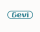
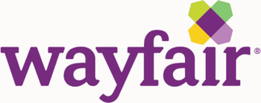

Education meets Execution
Together we cover the full journey — from idea validation to profitable, scalable business.
20+ years in education research and youth entrepreneurship. Teaches at NYU. Specializes in customer discovery and helping founders validate ideas before they invest — because the best decisions are made before a dollar is spent.
Some of our clients
Brands and organizations we’ve worked with across sourcing, logistics, compliance, and beyond.
Launch hypercare, tariff compliance, and 3PL oversight.
Full-scope ongoing management: P&L, sourcing, online store, supply chain, and bookkeeping.
Market research to validate product-market fit and identify growth opportunities.
China market entry consultation — strategy and collaborative planning.
End-to-end buildout: P&L, cash flow, sourcing, launch hypercare, and sales on Shopify and Amazon.

Market research and channel development consultation.
Business strategy, product development, and entrepreneurship education for young founders.
eCommerce marketplace launch strategy whitepaper and proposal development.
US market introduction and sourcing support for Italian startups entering New York.
Strategic collaboration to provide business education to NYC small business owners.
P&L and cash flow modeling, premium manufacturer connections, FDA compliance, and sales commission strategy.

China eCommerce seller market trend analysis and brainstorming sessions with C-suite leadership.
Strategic collaboration to deliver entrepreneurship education to young founders.